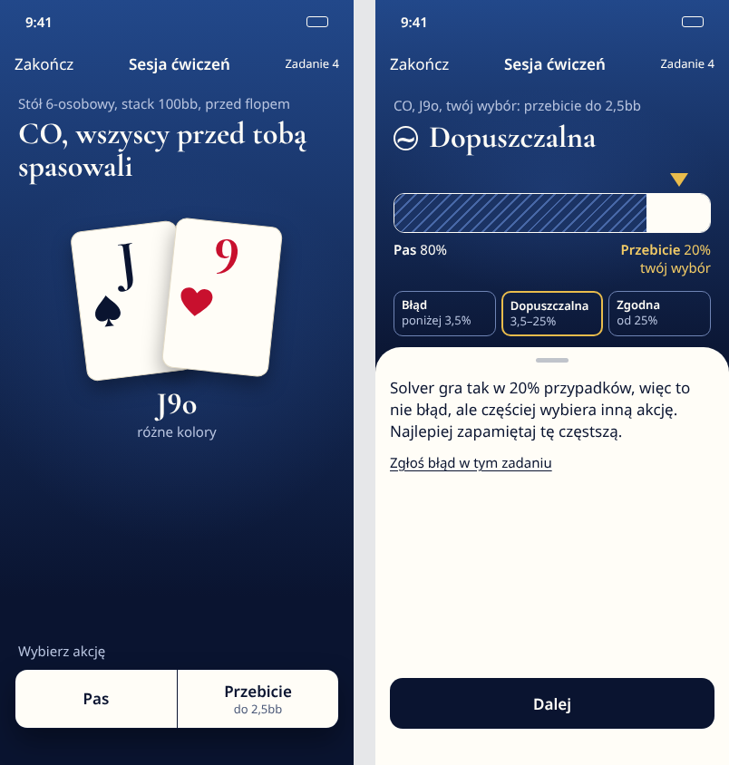
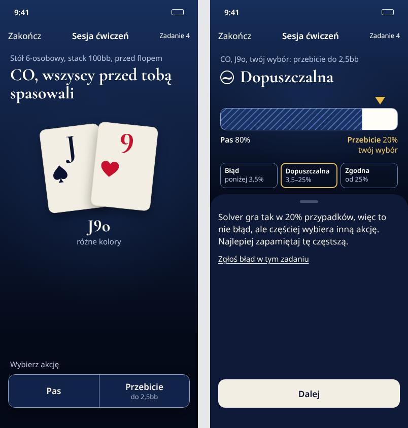
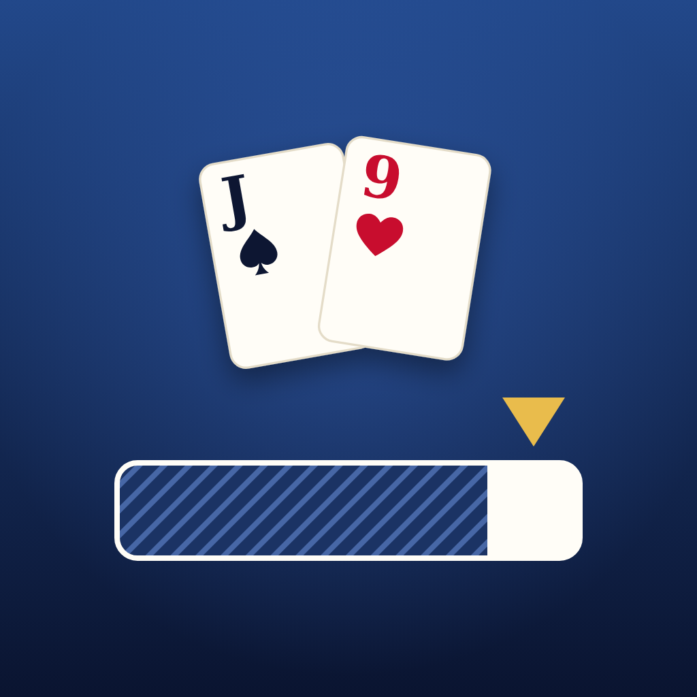
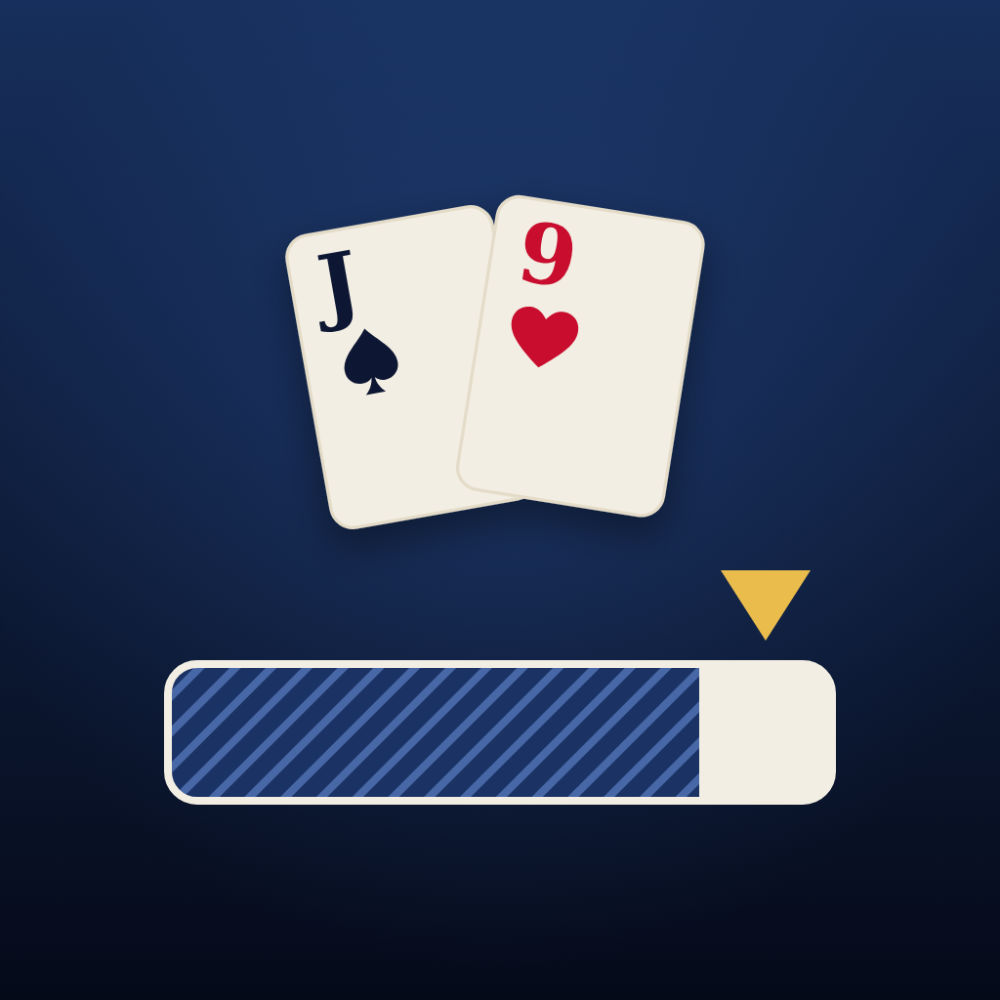
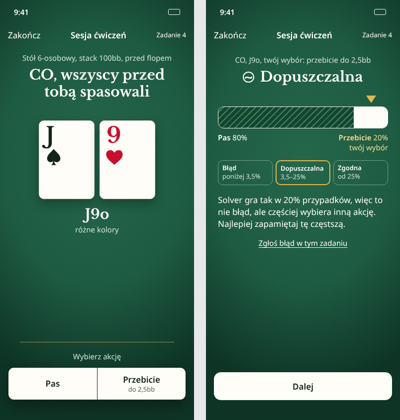
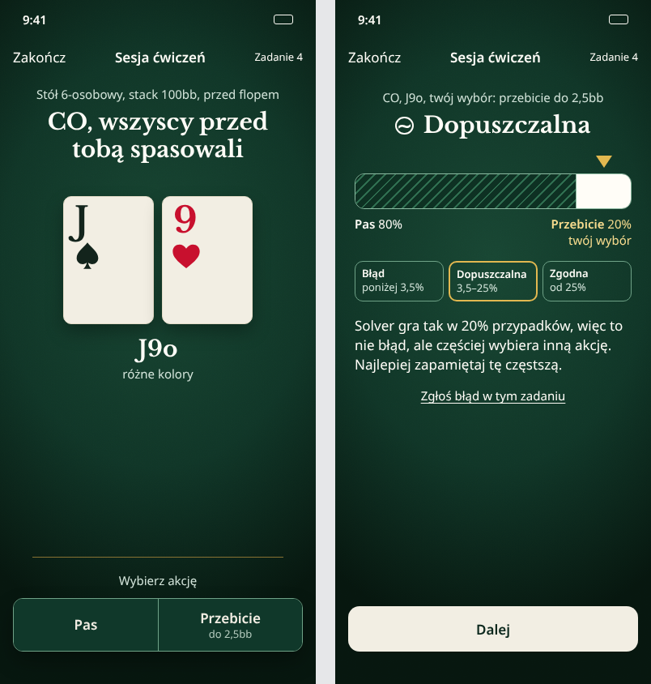
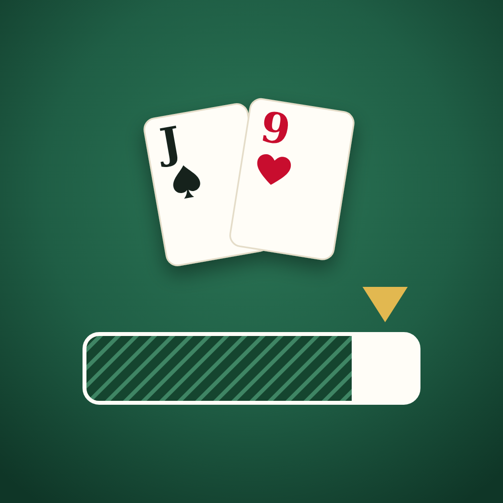
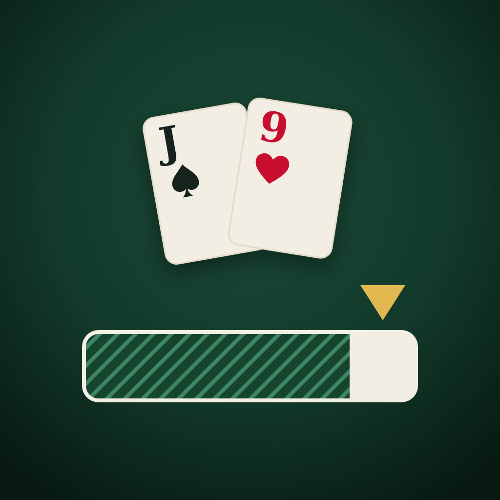
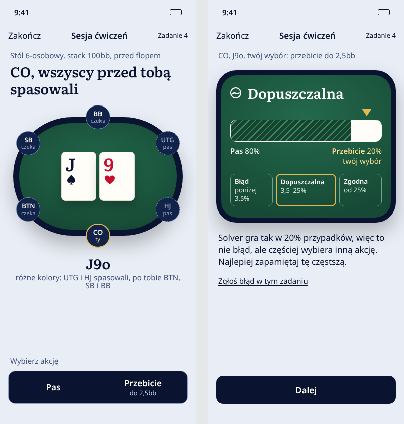
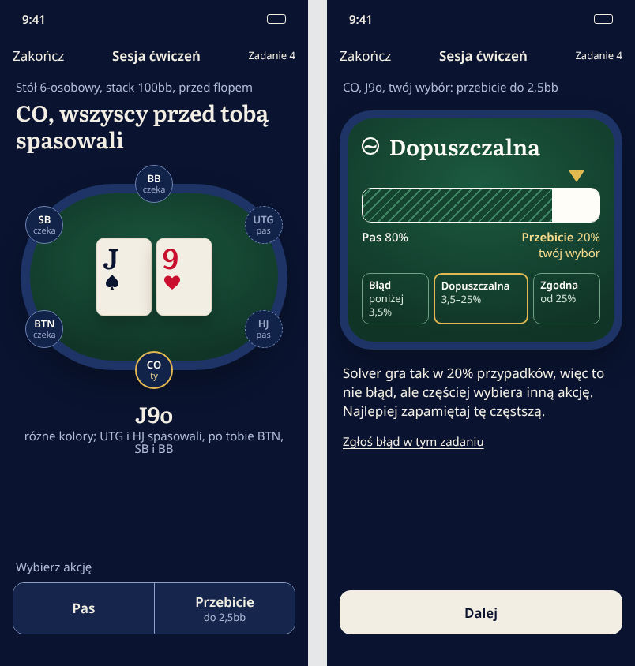

G. Granat i złoto
Świat ikony poprzedniej aplikacji na całym ekranie: granatowe niebo z poświatą, karty z kości słoniowej w wachlarzu, pasek strategii w strefie kciuka; po ocenie wynik na granacie, wyjaśnienie na jasnym arkuszu.




Najmocniejszy argument: Najbliżej tego, co już ci się podobało (ikona), i najspokojniejszy: jeden kolor tła, jeden akcent. Działa dla każdego typu zadania (zakresy, liczby, scenariusz), bo nie potrzebuje stołu ani pozycji.
Słabość: Krój Cormorant przy największym tekście wygląda na mniejszy niż treść (mała wysokość liter); od AX1 tytuły trzeba przełączać na krój systemowy (E3). Granat z poświatą jest blisko ciemnych motywów kategorii (10 z 13 aplikacji w skanie).
H. Sukno i złoto
Wnętrze poprzedniej aplikacji przeniesione na cały ekran: sukno pod lampą z drobnym włóknem, karty rozdane na stół, jedna mosiężna listwa stołu nad strefą akcji.




Najmocniejszy argument: Najbardziej „pokerowy” i ciepły; zielone sukno to kolor, który poprzednia aplikacja miała w środku, więc ciągłość dla obecnego użytkownika (ciebie) jest największa.
Słabość: Zielone sukno ze złotem to dokładnie paleta kontrolna „trenera bez wiedzy o dziedzinie” (karta a); najbliżej klimatu kasyna. Złoto na jasnym suknie ledwo mieści się w progu kontrastu (3,4:1).
I. Stół w granacie
Ikona i wnętrze razem: granatowa rama, zielone sukno stołu widzianego z góry; stół pokazuje prawdziwy stan rozdania (UTG i HJ spasowali, ty na CO, czekają BTN, SB, BB), a po decyzji wynik z paskiem leży na suknie.




Najmocniejszy argument: Jedyny, który pokazuje pozycję, czyli najważniejszą informację przed flopem, obrazem: od razu widać, ilu graczy jeszcze zostało za tobą. Łączy oba światy, które wskazałeś.
Słabość: Owalny stół z miejscami to element karty kontrolnej (a); broni się tylko dlatego, że niesie dane (bez żetonów i puli). Przy zadaniach liczbowych i z lekcji stół nie ma czego pokazać. Etykiety miejsc nie rosną z tekstem (stan stołu powtórzony tekstem pod spodem).